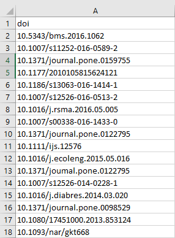
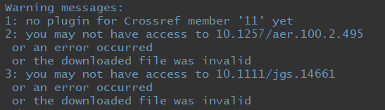

Many institutions have reported that participation rates of article deposit in their IR are low regardless of their various efforts in outreach and engagement. Even when the deposit is mandated, the participation rate can still be quite low.
Once this hurdle was overcome, there is another challenge faced by the IR administrators, ensuring that the version submitted by the researcher is the appropriate version. If it is not, IR administrators would need to take additional steps to correspond with the researcher to obtain the appropriate version. Thus, increasing their administrative work load.
Therefore, some institutions had taken the pro-active initiative to complete the deposit on behalf of their researchers. This certainly is not a small undertaking. However, there are openly available R packages (https://ropensci.org/) that can be used to automate some of the processes. In this page, I will summarize the steps to do that.
The following packages are required, please install them beforehand.
# install.packages("fulltext")
library(kableExtra)## Warning: package 'kableExtra' was built under R version 3.5.3library(fulltext)
library(tidyverse)## Warning: package 'tidyverse' was built under R version 3.5.3## -- Attaching packages --------------------------------- tidyverse 1.2.1 --## v ggplot2 3.1.0 v purrr 0.3.2
## v tibble 2.0.1 v dplyr 0.8.3
## v tidyr 0.8.3 v stringr 1.4.0
## v readr 1.3.1 v forcats 0.4.0## Warning: package 'tidyr' was built under R version 3.5.3## Warning: package 'purrr' was built under R version 3.5.3## Warning: package 'dplyr' was built under R version 3.5.3## Warning: package 'stringr' was built under R version 3.5.3## -- Conflicts ------------------------------------ tidyverse_conflicts() --
## x dplyr::collect() masks fulltext::collect()
## x dplyr::filter() masks stats::filter()
## x dplyr::group_rows() masks kableExtra::group_rows()
## x dplyr::lag() masks stats::lag()library(plyr)## -------------------------------------------------------------------------## You have loaded plyr after dplyr - this is likely to cause problems.
## If you need functions from both plyr and dplyr, please load plyr first, then dplyr:
## library(plyr); library(dplyr)## -------------------------------------------------------------------------##
## Attaching package: 'plyr'## The following objects are masked from 'package:dplyr':
##
## arrange, count, desc, failwith, id, mutate, rename, summarise,
## summarize## The following object is masked from 'package:purrr':
##
## compactlibrary(roadoi)
library(purrr)
library(rromeo)## Warning: package 'rromeo' was built under R version 3.5.3library(rcrossref)
library(tidyr)
library(dplyr)First thing, get a list of the DOIs of your institution’s works that you would like to deposit. This list might be very long, so it can be split into several CSV files. This is so that we do not hit the limit when querying Unpaywall API. The CSV file looks like the following. 
list.filenames<-list.files(pattern=".csv$") Unpaywall (https://unpaywall.org/) is a non profit organization that aims to make scholarly works more open. They maintain a database of links to full-text articles from open-access sources all over the world. The content is harvested from legal sources including repositories run by universities, governments, and scholarly societies, as well as open content hosted by publishers themselves.
Unpaywall requests users to keep the API requests to below 100k per day and to include their email to the URL of requests. Please include your own email below.
unpaywall<- tibble()
# Creating loop so that we can query Unpaywall API based on dois in several CSV files
for (i in 1:length(list.filenames))
{
#reading dois from csv file
dois <- read.csv(list.filenames[i], header=TRUE)
vec_doi <- as_tibble(dois)
##querying unpaywall API & to
#catch error when the API does not return valid JSON or is not available
df_data <- purrr::map(vec_doi, .f = safely(function(x) oadoi_fetch(x,
email =your_own_email)))
df <- purrr::map_df(df_data, "result")
##getting values from best_oa_location
best_oa_evidence <- df %>%
mutate(evidences = map(best_oa_location, "evidence") %>%
map_if(is_empty, ~ NA_character_) %>%
flatten_chr())%>%
.$evidences
best_oa_host <- df %>%
mutate(hosts = map(best_oa_location, "host_type") %>%
map_if(is_empty, ~ NA_character_) %>%
flatten_chr())%>%
.$hosts
best_oa_license <- df %>%
mutate(licenses = map(best_oa_location, "license") %>%
map_if(is_empty, ~ NA_character_) %>%
flatten_chr())%>%
.$licenses
best_oa_url <- df %>%
mutate(urls = map(best_oa_location, "url") %>%
map_if(is_empty, ~ NA_character_) %>%
flatten_chr())%>%
.$urls
best_oa_url_for_pdf <- df %>%
mutate(pdfs = map(best_oa_location, "url_for_pdf") %>%
map_if(is_empty, ~ NA_character_) %>%
flatten_chr())%>%
.$pdfs
best_oa_version <- df %>%
mutate(versions = map(best_oa_location, "version") %>%
map_if(is_empty, ~ NA_character_) %>%
flatten_chr())%>%
.$versions
#selecting specific columns from the results
df_selection <- df %>% select(1, 4:13)
##merging the columns together
df_final <- add_column(df_selection, best_oa_evidence, best_oa_host, best_oa_license,best_oa_url,best_oa_url_for_pdf,best_oa_version)
#to combine all the entries
unpaywall <- bind_rows(unpaywall, df_final)
Sys.sleep(60)
}## Request failed [404]. Retrying in 1 seconds...## Request failed [404]. Retrying in 1.1 seconds...## Warning: Unpaywall request failed [404]
## '10.1371/joumal.pone.0122795' is an invalid doi. See https://doi.org/10.1371/joumal.pone.0122795# changing year from factor to numeric
unpaywall$year1 <- as.numeric(as.character(unpaywall$year))
#limit to only journal article only
unpaywall <- unpaywall %>%
filter(genre == "journal-article")Unpaywall does not provide OA classification; however, they provide other fields (for e.g. best OA evidence) that can be used as a guide in determining the classification:
Closed: No free copy
Bronze: Journal is closed, article is free on publisher page, with no license.
Hybrid: Journal is closed, article is free on publisher page under some kind of open license.
Gold: Journal is open
Green: Free-to-read on repository
Based on the above, we will categorize the publication’s OA level.
unpaywall1 <- unpaywall %>%
mutate(oa = case_when((journal_is_oa == FALSE & is_oa == FALSE) ~ "closed",
(best_oa_host == "publisher" & is.na(best_oa_license) == TRUE & is_oa ==
TRUE & journal_is_oa == FALSE) ~ "bronze",
(best_oa_host == "publisher" & is.na(best_oa_license) != TRUE & is_oa ==
TRUE & journal_is_oa == FALSE) ~ "hybrid",
(best_oa_host == "publisher" & is_oa == TRUE & journal_is_oa == TRUE)
~ "gold",
(best_oa_host == "repository" & is_oa == TRUE & journal_is_oa == FALSE)
~ "green"))
kable(unpaywall1) %>%
kable_styling(bootstrap_options = c("striped", "hover")) %>%
scroll_box(width = "100%", height = "400px")| doi | data_standard | is_oa | genre | journal_is_oa | journal_is_in_doaj | journal_issns | journal_name | publisher | title | year | best_oa_evidence | best_oa_host | best_oa_license | best_oa_url | best_oa_url_for_pdf | best_oa_version | year1 | oa |
|---|---|---|---|---|---|---|---|---|---|---|---|---|---|---|---|---|---|---|
| 10.5343/bms.2016.1062 | 2 | FALSE | journal-article | FALSE | FALSE | 0007-4977 | Bulletin of Marine Science | Bulletin of Marine Science | First observation of <I>Drupella rugosa</I> egg capsules on scleractinian coral <I>Pocillopora damicornis</I> | 2016 | NA | NA | NA | NA | NA | NA | 2016 | closed |
| 10.1007/s11252-016-0589-2 | 2 | FALSE | journal-article | FALSE | FALSE | 1083-8155,1573-1642 | Urban Ecosystems | Springer Nature | Spatial variability of epibiotic assemblages on marina pontoons in Singapore | 2016 | NA | NA | NA | NA | NA | NA | 2016 | closed |
| 10.1371/journal.pone.0159755 | 2 | TRUE | journal-article | TRUE | TRUE | 1932-6203 | PLOS ONE | Public Library of Science (PLoS) | Differential Response of Coral Assemblages to Thermal Stress Underscores the Complexity in Predicting Bleaching Susceptibility | 2016 | open (via page says license) | publisher | cc-by | https://journals.plos.org/plosone/article/file?id=10.1371/journal.pone.0159755&type=printable | https://journals.plos.org/plosone/article/file?id=10.1371/journal.pone.0159755&type=printable | publishedVersion | 2016 | gold |
| 10.1177/2010105815624121 | 2 | TRUE | journal-article | TRUE | TRUE | 2010-1058,2059-2329 | Proceedings of Singapore Healthcare | SAGE Publications | Living with heart failure: Perspectives of patients from Singapore | 2016 | oa journal (via doaj) | publisher | cc-by-nc | https://doi.org/10.1177/2010105815624121 | NA | publishedVersion | 2016 | gold |
| 10.1186/s13063-016-1414-1 | 2 | TRUE | journal-article | TRUE | TRUE | 1745-6215 | Trials | Springer Nature | Impact of advance care planning on the care of patients with heart failure: study protocol for a randomized controlled trial | 2016 | open (via page says license) | publisher | cc-by | https://trialsjournal.biomedcentral.com/track/pdf/10.1186/s13063-016-1414-1 | https://trialsjournal.biomedcentral.com/track/pdf/10.1186/s13063-016-1414-1 | publishedVersion | 2016 | gold |
| 10.1007/s12526-016-0513-2 | 2 | FALSE | journal-article | FALSE | FALSE | 1867-1616,1867-1624 | Marine Biodiversity | Springer Nature | Coral nurseries as habitats for juvenile corallivorous butterflyfish | 2016 | NA | NA | NA | NA | NA | NA | 2016 | closed |
| 10.1016/j.rsma.2016.05.005 | 2 | FALSE | journal-article | FALSE | FALSE | 2352-4855 | Regional Studies in Marine Science | Elsevier BV | Coral restoration in Singapore’s sediment-challenged sea | 2016 | NA | NA | NA | NA | NA | NA | 2016 | closed |
| 10.1007/s00338-016-1433-0 | 2 | TRUE | journal-article | FALSE | FALSE | 0722-4028,1432-0975 | Coral Reefs | Springer Nature | Tentacular autotomy and polyp regeneration in the scleractinian coral Euphyllia glabrescens | 2016 | open (via free pdf) | publisher | NA | https://link.springer.com/content/pdf/10.1007%2Fs00338-016-1433-0.pdf | https://link.springer.com/content/pdf/10.1007%2Fs00338-016-1433-0.pdf | publishedVersion | 2016 | bronze |
| 10.1371/journal.pone.0122795 | 2 | TRUE | journal-article | TRUE | TRUE | 1932-6203 | PLOS ONE | Public Library of Science (PLoS) | Direct Medical Cost of Type 2 Diabetes in Singapore | 2015 | open (via page says license) | publisher | cc-by | https://journals.plos.org/plosone/article/file?id=10.1371/journal.pone.0122795&type=printable | https://journals.plos.org/plosone/article/file?id=10.1371/journal.pone.0122795&type=printable | publishedVersion | 2015 | gold |
| 10.1111/ijs.12576 | 2 | FALSE | journal-article | FALSE | FALSE | 1747-4930,1747-4949 | International Journal of Stroke | SAGE Publications | Direct medical cost of stroke in Singapore | 2015 | NA | NA | NA | NA | NA | NA | 2015 | closed |
| 10.1016/j.ecoleng.2015.05.016 | 2 | FALSE | journal-article | FALSE | FALSE | 0925-8574 | Ecological Engineering | Elsevier BV | Enhancing the biodiversity of coastal defence structures: transplantation of nursery-reared reef biota onto intertidal seawalls | 2015 | NA | NA | NA | NA | NA | NA | 2015 | closed |
| 10.1007/s12526-014-0228-1 | 2 | FALSE | journal-article | FALSE | FALSE | 1867-1616,1867-1624 | Marine Biodiversity | Springer Nature | High density aggregations of cucumariids (Echinodermata: Holothuroidea) on a Singapore sedimented reef | 2014 | NA | NA | NA | NA | NA | NA | 2014 | closed |
| 10.1016/j.diabres.2014.03.020 | 2 | FALSE | journal-article | FALSE | FALSE | 0168-8227 | Diabetes Research and Clinical Practice | Elsevier BV | Cost-of-illness studies of diabetes mellitus: A systematic review | 2014 | NA | NA | NA | NA | NA | NA | 2014 | closed |
| 10.1371/journal.pone.0098529 | 2 | TRUE | journal-article | TRUE | TRUE | 1932-6203 | PLoS ONE | Public Library of Science (PLoS) | Augmenting the Post-Transplantation Growth and Survivorship of Juvenile Scleractinian Corals via Nutritional Enhancement | 2014 | open (via page says license) | publisher | cc-by | https://journals.plos.org/plosone/article/file?id=10.1371/journal.pone.0098529&type=printable | https://journals.plos.org/plosone/article/file?id=10.1371/journal.pone.0098529&type=printable | publishedVersion | 2014 | gold |
| 10.1080/17451000.2013.853124 | 2 | FALSE | journal-article | FALSE | FALSE | 1745-1000,1745-1019 | Marine Biology Research | Informa UK Limited | Rearing juvenile ‘corals of opportunity’ inin situnurseries – A reef rehabilitation approach for sediment-impacted environments | 2014 | NA | NA | NA | NA | NA | NA | 2014 | closed |
| 10.1093/nar/gkt668 | 2 | TRUE | journal-article | TRUE | TRUE | 1362-4962,0305-1048 | Nucleic Acids Research | Oxford University Press (OUP) | A multidimensional platform for the purification of non-coding RNA species | 2013 | open (via page says Open Access) | publisher | implied-oa | https://academic.oup.com/nar/article-pdf/41/17/e168/25362576/gkt668.pdf | https://academic.oup.com/nar/article-pdf/41/17/e168/25362576/gkt668.pdf | publishedVersion | 2013 | gold |
| 10.1016/j.aquaculture.2013.08.025 | 2 | FALSE | journal-article | FALSE | FALSE | 0044-8486 | Aquaculture | Elsevier BV | Grazers improve health of coral juveniles in ex situ mariculture | 2013 | NA | NA | NA | NA | NA | NA | 2013 | closed |
| 10.11622/smedj.2013122 | 2 | TRUE | journal-article | FALSE | FALSE | 0037-5675 | Singapore Medical Journal | Singapore Medical Journal | Prescribing health: exercise | 2013 | open (via free pdf) | publisher | NA | http://smj.org.sg/sites/default/files/5406/5406practice1.pdf | http://smj.org.sg/sites/default/files/5406/5406practice1.pdf | publishedVersion | 2013 | bronze |
SHERPA RoMEO is an online resource that aggregates and analyses publisher open access policies from around the world and provides summaries of self-archiving permissions and conditions of rights given to authors on a journal-by-journal basis.
To apply for API key, please refer to this page - http://www.sherpa.ac.uk/romeo/api.html
#separate the 2 ISSNs
unpaywall2 <- unpaywall1 %>%
separate(journal_issns, c("issn1","issn2"), sep = "\\,", remove = TRUE)
#querying romeo API using the issn1
#your_own_key : please use your own API key
romeo <- map(unpaywall2$issn1, .f = safely(function(x) rr_journal_issn(x, your_own_key)))
# pluck the data, get rid of duplicate ISSNs and the extra title column
romeo_df <- map_df(romeo, "result") %>%
filter(!duplicated(issn)) %>%
select(-title)
# join by ISSN
unpaywall_romeo1 <- unpaywall2 %>%
left_join(romeo_df, by = c("issn1" = "issn"))
# Using issn2 for those resulted in NA using issn
# add rownames as identifiers so we can bind together
unpaywall_romeo1 <- unpaywall_romeo1 %>%
rownames_to_column()
# create table of items not found by issn1 (where romeocolour is NA)
unp.na <- unpaywall_romeo1 %>%
filter(is.na(romeocolour))
# create vector of NA rownames
na_rownames <- as.integer(unp.na$rowname)
# query sherpa-romeo with issn2
romeo2 <- map(unp.na$issn2, .f = safely(function(x) rr_journal_issn(x, key=your_own_key)))
# pluck data, remove duplicates and extra title column
romeo2_df <- map_df(romeo2, "result") %>%
filter(!duplicated(issn)) %>%
select(-title)
# delete columsn with NA create new table with the values we just retrieved
unp.na2 <- unp.na %>%
select(-romeocolour, -preprint, -postprint, -pdf, -pre_embargo, -post_embargo, -pdf_embargo) %>%
left_join(romeo2_df, by = c("issn2" = "issn"))
# join NA data back
# remove NA data from unpaywall_romeo1 and replace with new data, rearrange by rowname
unpaywall_romeo2 <- unpaywall_romeo1 %>%
slice(-na_rownames) %>%
bind_rows(unp.na2) %>%
mutate(rowname = as.integer(rowname)) %>%
arrange(rowname)
# create new column to give information about publisher permissions
`%notin%` <- negate(`%in%`)
unpaywall_romeo_final <- unpaywall_romeo2 %>%
mutate(status = case_when(pdf == "can" & pdf_embargo == "NA" ~ "final_immediate",
pdf == "restricted" ~ "final_restricted",
postprint == "can" & post_embargo == "NA" &
pdf %notin% c("can", "restricted") ~
"postprint_immediate",
postprint == "restricted" & pdf %notin% c("can", "restricted") ~
"postprint_restricted",
preprint == "can" & pre_embargo == "NA" &
postprint %notin% c("can", "restricted") &
pdf %notin% c("can", "restricted") ~ "preprint_immediate",
preprint == "restricted" & postprint %notin% c("can", "restricted") &
pdf %notin% c("can", "restricted") ~ "preprint_restricted",
preprint == "cannot" & postprint == "cannot" & pdf == "cannot" ~
"fully_restricted"))
kable(unpaywall_romeo_final) %>%
kable_styling(bootstrap_options = c("striped", "hover")) %>%
scroll_box(width = "100%", height = "400px")| rowname | doi | data_standard | is_oa | genre | journal_is_oa | journal_is_in_doaj | issn1 | issn2 | journal_name | publisher | title | year | best_oa_evidence | best_oa_host | best_oa_license | best_oa_url | best_oa_url_for_pdf | best_oa_version | year1 | oa | romeocolour | preprint | postprint | pre_embargo | post_embargo | pdf_embargo | status | |
|---|---|---|---|---|---|---|---|---|---|---|---|---|---|---|---|---|---|---|---|---|---|---|---|---|---|---|---|---|
| 1 | 10.5343/bms.2016.1062 | 2 | FALSE | journal-article | FALSE | FALSE | 0007-4977 | NA | Bulletin of Marine Science | Bulletin of Marine Science | First observation of <I>Drupella rugosa</I> egg capsules on scleractinian coral <I>Pocillopora damicornis</I> | 2016 | NA | NA | NA | NA | NA | NA | 2016 | closed | white | cannot | cannot | restricted | NA | NA | 5 years | final_restricted |
| 2 | 10.1007/s11252-016-0589-2 | 2 | FALSE | journal-article | FALSE | FALSE | 1083-8155 | 1573-1642 | Urban Ecosystems | Springer Nature | Spatial variability of epibiotic assemblages on marina pontoons in Singapore | 2016 | NA | NA | NA | NA | NA | NA | 2016 | closed | green | can | can | cannot | NA | NA | NA | NA |
| 3 | 10.1371/journal.pone.0159755 | 2 | TRUE | journal-article | TRUE | TRUE | 1932-6203 | NA | PLOS ONE | Public Library of Science (PLoS) | Differential Response of Coral Assemblages to Thermal Stress Underscores the Complexity in Predicting Bleaching Susceptibility | 2016 | open (via page says license) | publisher | cc-by | https://journals.plos.org/plosone/article/file?id=10.1371/journal.pone.0159755&type=printable | https://journals.plos.org/plosone/article/file?id=10.1371/journal.pone.0159755&type=printable | publishedVersion | 2016 | gold | green | can | can | can | NA | NA | NA | NA |
| 4 | 10.1177/2010105815624121 | 2 | TRUE | journal-article | TRUE | TRUE | 2010-1058 | 2059-2329 | Proceedings of Singapore Healthcare | SAGE Publications | Living with heart failure: Perspectives of patients from Singapore | 2016 | oa journal (via doaj) | publisher | cc-by-nc | https://doi.org/10.1177/2010105815624121 | NA | publishedVersion | 2016 | gold | green | can | can | can | NA | NA | NA | NA |
| 5 | 10.1186/s13063-016-1414-1 | 2 | TRUE | journal-article | TRUE | TRUE | 1745-6215 | NA | Trials | Springer Nature | Impact of advance care planning on the care of patients with heart failure: study protocol for a randomized controlled trial | 2016 | open (via page says license) | publisher | cc-by | https://trialsjournal.biomedcentral.com/track/pdf/10.1186/s13063-016-1414-1 | https://trialsjournal.biomedcentral.com/track/pdf/10.1186/s13063-016-1414-1 | publishedVersion | 2016 | gold | green | can | can | can | NA | NA | NA | NA |
| 6 | 10.1007/s12526-016-0513-2 | 2 | FALSE | journal-article | FALSE | FALSE | 1867-1616 | 1867-1624 | Marine Biodiversity | Springer Nature | Coral nurseries as habitats for juvenile corallivorous butterflyfish | 2016 | NA | NA | NA | NA | NA | NA | 2016 | closed | green | can | can | cannot | NA | NA | NA | NA |
| 7 | 10.1016/j.rsma.2016.05.005 | 2 | FALSE | journal-article | FALSE | FALSE | 2352-4855 | NA | Regional Studies in Marine Science | Elsevier BV | Coral restoration in Singapore’s sediment-challenged sea | 2016 | NA | NA | NA | NA | NA | NA | 2016 | closed | NA | NA | NA | NA | NA | NA | NA | NA |
| 8 | 10.1007/s00338-016-1433-0 | 2 | TRUE | journal-article | FALSE | FALSE | 0722-4028 | 1432-0975 | Coral Reefs | Springer Nature | Tentacular autotomy and polyp regeneration in the scleractinian coral Euphyllia glabrescens | 2016 | open (via free pdf) | publisher | NA | https://link.springer.com/content/pdf/10.1007%2Fs00338-016-1433-0.pdf | https://link.springer.com/content/pdf/10.1007%2Fs00338-016-1433-0.pdf | publishedVersion | 2016 | bronze | green | can | can | cannot | NA | NA | NA | NA |
| 9 | 10.1371/journal.pone.0122795 | 2 | TRUE | journal-article | TRUE | TRUE | 1932-6203 | NA | PLOS ONE | Public Library of Science (PLoS) | Direct Medical Cost of Type 2 Diabetes in Singapore | 2015 | open (via page says license) | publisher | cc-by | https://journals.plos.org/plosone/article/file?id=10.1371/journal.pone.0122795&type=printable | https://journals.plos.org/plosone/article/file?id=10.1371/journal.pone.0122795&type=printable | publishedVersion | 2015 | gold | green | can | can | can | NA | NA | NA | NA |
| 10 | 10.1111/ijs.12576 | 2 | FALSE | journal-article | FALSE | FALSE | 1747-4930 | 1747-4949 | International Journal of Stroke | SAGE Publications | Direct medical cost of stroke in Singapore | 2015 | NA | NA | NA | NA | NA | NA | 2015 | closed | green | can | can | cannot | NA | NA | NA | NA |
| 11 | 10.1016/j.ecoleng.2015.05.016 | 2 | FALSE | journal-article | FALSE | FALSE | 0925-8574 | NA | Ecological Engineering | Elsevier BV | Enhancing the biodiversity of coastal defence structures: transplantation of nursery-reared reef biota onto intertidal seawalls | 2015 | NA | NA | NA | NA | NA | NA | 2015 | closed | green | can | can | cannot | NA | NA | NA | NA |
| 12 | 10.1007/s12526-014-0228-1 | 2 | FALSE | journal-article | FALSE | FALSE | 1867-1616 | 1867-1624 | Marine Biodiversity | Springer Nature | High density aggregations of cucumariids (Echinodermata: Holothuroidea) on a Singapore sedimented reef | 2014 | NA | NA | NA | NA | NA | NA | 2014 | closed | green | can | can | cannot | NA | NA | NA | NA |
| 13 | 10.1016/j.diabres.2014.03.020 | 2 | FALSE | journal-article | FALSE | FALSE | 0168-8227 | NA | Diabetes Research and Clinical Practice | Elsevier BV | Cost-of-illness studies of diabetes mellitus: A systematic review | 2014 | NA | NA | NA | NA | NA | NA | 2014 | closed | green | can | can | cannot | NA | NA | NA | NA |
| 14 | 10.1371/journal.pone.0098529 | 2 | TRUE | journal-article | TRUE | TRUE | 1932-6203 | NA | PLoS ONE | Public Library of Science (PLoS) | Augmenting the Post-Transplantation Growth and Survivorship of Juvenile Scleractinian Corals via Nutritional Enhancement | 2014 | open (via page says license) | publisher | cc-by | https://journals.plos.org/plosone/article/file?id=10.1371/journal.pone.0098529&type=printable | https://journals.plos.org/plosone/article/file?id=10.1371/journal.pone.0098529&type=printable | publishedVersion | 2014 | gold | green | can | can | can | NA | NA | NA | NA |
| 15 | 10.1080/17451000.2013.853124 | 2 | FALSE | journal-article | FALSE | FALSE | 1745-1000 | 1745-1019 | Marine Biology Research | Informa UK Limited | Rearing juvenile ‘corals of opportunity’ inin situnurseries – A reef rehabilitation approach for sediment-impacted environments | 2014 | NA | NA | NA | NA | NA | NA | 2014 | closed | green | can | can | cannot | NA | NA | NA | NA |
| 16 | 10.1093/nar/gkt668 | 2 | TRUE | journal-article | TRUE | TRUE | 1362-4962 | 0305-1048 | Nucleic Acids Research | Oxford University Press (OUP) | A multidimensional platform for the purification of non-coding RNA species | 2013 | open (via page says Open Access) | publisher | implied-oa | https://academic.oup.com/nar/article-pdf/41/17/e168/25362576/gkt668.pdf | https://academic.oup.com/nar/article-pdf/41/17/e168/25362576/gkt668.pdf | publishedVersion | 2013 | gold | green | can | can | can | NA | NA | NA | NA |
| 17 | 10.1016/j.aquaculture.2013.08.025 | 2 | FALSE | journal-article | FALSE | FALSE | 0044-8486 | NA | Aquaculture | Elsevier BV | Grazers improve health of coral juveniles in ex situ mariculture | 2013 | NA | NA | NA | NA | NA | NA | 2013 | closed | green | can | can | cannot | NA | NA | NA | NA |
| 18 | 10.11622/smedj.2013122 | 2 | TRUE | journal-article | FALSE | FALSE | 0037-5675 | NA | Singapore Medical Journal | Singapore Medical Journal | Prescribing health: exercise | 2013 | open (via free pdf) | publisher | NA | http://smj.org.sg/sites/default/files/5406/5406practice1.pdf | http://smj.org.sg/sites/default/files/5406/5406practice1.pdf | publishedVersion | 2013 | bronze | NA | NA | NA | NA | NA | NA | NA | NA |
# create a summary table
unpaywall_romeo_summary <- unpaywall_romeo_final %>%
group_by(status) %>%
tally()
kable(unpaywall_romeo_summary) %>%
kable_styling(bootstrap_options = c("striped", "hover")) | status | n |
|---|---|
| final_restricted | 1 |
| NA | 17 |
For example, let’s say we only want to deposit full text that the publisher allows PDF version to be deposited immediately.
to_dl <- sample %>%
filter(status == "final_immediate" & best_oa_license == "cc-by")There are 2 methods to download the full text :
Using another R package called fulltext
Using direct URL download
The fulltext package made it easy to download the full text of a publication based on a DOI. They have several data sources, for e.g. PLOS, arXiv.
#change the class of DOI from factor to character
df <- to_dl %>%
mutate(doi = as.character(doi))
#splitting the data into a smaller dataframe for example 100 dois per dataframe
#get the number of dataframes to be created, in this case, it is variable s
s <- (nrow(df)-1) %/% 100
dt <- split(df, (seq(nrow(df))-1) %/% 100)
#so we will create s dataframe that is named as doi1, doi2, ... till doi(s)
for(i in 1:s){
nam <- paste("doi", i, sep = "")
assign(nam, dt [[i]])
}
#creating loop to download full text
#note: once you are done with the first dataframe, doi, change it to doi2 and so on
for(j in 1:length(doi1)){
cat(".")
res <- purrr::map(doi1, .f = safely(function(x) ft_get(x,type="pdf")))
}
#note:
#the location of the full text downloaded can be found at /Users/xxx/Library/Caches/R/fulltextThere will be warnings or errors displayed if the full text is not downloaded. 
For full text that cannot be downloaded using the fulltext package, we can use the direct URL approach as Unpaywall has provided the direct URL to get the full text of the publication. Similarly, there will be a warning if the full text cannot be downloaded from the URL.
# convert the url as charcter, as by default it is assigned as factor
urls <- to_dl %>%
select(doi,best_oa_url_for_pdf) %>%
mutate(doi=as.character(doi), url=as.character(best_oa_url_for_pdf))
#set location to download the files
setwd("~/Desktop/ft/files/")
#create empty error file (error1.txt) if the url is not working
for(s in 1:nrow(urls)){
name=paste("doi",s,".pdf",sep="") #create a name for the file to be downloaded
url_n=urls$url[[s]]
tryCatch(download.file(url_n,
destfile=name, method='auto'),
error = function(e) {
file.create(paste("error", s, ".txt",sep=""))
}) #if the url error, create an empty error file and skip to next url
}Use Crossref as a source to create the metadata file.
#get the metadata based on a list of doi from dataframe called doi1
works_list <- purrr::map(unpaywall_romeo_final$doi,
function(x) {
my_works <- cr_works(doi = x) %>%
purrr::pluck("data")
})
#unnest the list
works_df <- works_list %>%
purrr::map_dfr(., function(x) {
x[, ]
})
#unnest the authors field to combine them
authors <- works_df %>%
filter(!map_lgl(author, is.null)) %>%
unnest(author, .drop = TRUE) %>%
unite(author, c(family, given), sep = " ", remove = FALSE) %>%
dplyr::group_by(doi) %>%
filter(!is.na(author)) %>%
dplyr::summarise(all_authors=paste(author, collapse=" ; "))
#combine back with metadata
works_df1 <- works_df %>%
select(c(title,container.title, doi,issn,issue,volume,page,publisher, published.print))
combined <- left_join(x=works_df1, y=authors, by="doi")
cls <- sapply(combined, class)
newCombined <- combined %>% select(which(cls=="character"))
kable(newCombined) %>%
kable_styling(bootstrap_options = c("striped", "hover")) %>%
scroll_box(width = "100%", height = "400px")| title | container.title | doi | issn | issue | volume | page | publisher | published.print | all_authors |
|---|---|---|---|---|---|---|---|---|---|
| First observation of <I>Drupella rugosa</I> egg capsules on scleractinian coral <I>Pocillopora damicornis</I> | Bulletin of Marine Science | 10.5343/bms.2016.1062 | 0007-4977 | 3 | 92 | 353-354 | Bulletin of Marine Science | 2016-07-01 | Sam SQ ; Kikuzawa YP ; Taira D ; Ng CSL ; Toh TC ; Chou LM |
| Spatial variability of epibiotic assemblages on marina pontoons in Singapore | Urban Ecosystems | 10.1007/s11252-016-0589-2 | 1083-8155,1573-1642 | 1 | 20 | 183-197 | Springer Nature | 2017-02 | Toh Kok Ben ; Ng Chin Soon Lionel ; Wu Bokai ; Toh Tai Chong ; Cheo Pei Rong ; Tun Karenne ; Chou Loke Ming |
| Differential Response of Coral Assemblages to Thermal Stress Underscores the Complexity in Predicting Bleaching Susceptibility | PLOS ONE | 10.1371/journal.pone.0159755 | 1932-6203 | 7 | 11 | e0159755 | Public Library of Science (PLoS) | NA | Chou Loke Ming ; Toh Tai Chong ; Toh Kok Ben ; Ng Chin Soon Lionel ; Cabaitan Patrick ; Tun Karenne ; Goh Eugene ; Afiq-Rosli Lutfi ; Taira Daisuke ; Du Rosa Celia Poquita ; Loke Hai Xin ; Khalis Aizat ; Li Jinghan ; Song Tiancheng |
| Living with heart failure: Perspectives of patients from Singapore | Proceedings of Singapore Healthcare | 10.1177/2010105815624121 | 2010-1058,2059-2329 | 2 | 25 | 92-97 | SAGE Publications | 2016-06 | Malhotra Chetna ; Cheng Sim Wong Genevieve ; Tan Boon Cheng ; Ng Clarice Shu Hwa ; Lee Neo Chia ; Lau Cindy Suck Lan ; Sim David Kheng Leng ; Finkelstein Eric Andrew |
| Impact of advance care planning on the care of patients with heart failure: study protocol for a randomized controlled trial | Trials | 10.1186/s13063-016-1414-1 | 1745-6215 | 1 | 17 | NA | Springer Nature | 2016-12 | Malhotra Chetna ; Sim David Kheng Leng ; Jaufeerally Fazlur ; Vikas Nivedita Nadkarni ; Sim Genevieve Wong Cheng ; Tan Boon Cheng ; Ng Clarice Shu Hwa ; Tho Pei Leng ; Lim Jingfen ; Chuang Claire Ya-Ting ; Fong Florence Hui Mei ; Liu Joy ; Finkelstein Eric A. |
| Coral nurseries as habitats for juvenile corallivorous butterflyfish | Marine Biodiversity | 10.1007/s12526-016-0513-2 | 1867-1616,1867-1624 | 3 | 47 | 787-788 | Springer Nature | 2017-09 | Taira D. ; Toh T. C. ; Sam S. Q. ; Ng C. S. L. ; Chou L. M. |
| Coral restoration in Singapore’s sediment-challenged sea | Regional Studies in Marine Science | 10.1016/j.rsma.2016.05.005 | 2352-4855 | NA | 8 | 422-429 | Elsevier BV | 2016-11 | Ng Chin Soon Lionel ; Toh Tai Chong ; Chou Loke Ming |
| Tentacular autotomy and polyp regeneration in the scleractinian coral Euphyllia glabrescens | Coral Reefs | 10.1007/s00338-016-1433-0 | 0722-4028,1432-0975 | 3 | 35 | 819-819 | Springer Science and Business Media LLC | 2016-09 | Toh T. C. ; Ng C. S. L. |
| Direct Medical Cost of Type 2 Diabetes in Singapore | PLOS ONE | 10.1371/journal.pone.0122795 | 1932-6203 | 3 | 10 | e0122795 | Public Library of Science (PLoS) | NA | Shuyu Ng Charmaine ; Toh Matthias Paul Han Sim ; Ko Yu ; Yu-Chia Lee Joyce |
| Direct medical cost of stroke in Singapore | International Journal of Stroke | 10.1111/ijs.12576 | 1747-4930,1747-4949 | SA100 | 10 | 75-82 | SAGE Publications | 2015-10 | Ng Charmaine Shuyu ; Toh Matthias Paul Han Sim ; Ng Jiaying ; Ko Yu |
| Enhancing the biodiversity of coastal defence structures: transplantation of nursery-reared reef biota onto intertidal seawalls | Ecological Engineering | 10.1016/j.ecoleng.2015.05.016 | 0925-8574 | NA | 82 | 480-486 | Elsevier BV | 2015-09 | Ng Chin Soon Lionel ; Lim Swee Cheng ; Ong Joo Yong ; Teo Lay Ming Serena ; Chou Loke Ming ; Chua Kok Eng ; Tan Koh Siang |
| High density aggregations of cucumariids (Echinodermata: Holothuroidea) on a Singapore sedimented reef | Marine Biodiversity | 10.1007/s12526-014-0228-1 | 1867-1616,1867-1624 | 1 | 45 | 5-6 | Springer Science and Business Media LLC | 2015-03 | Ng Chin Soon Lionel ; Toh Tai Chong ; Toh Kok Ben ; Tun Karenne ; Chou Loke Ming |
| Cost-of-illness studies of diabetes mellitus: A systematic review | Diabetes Research and Clinical Practice | 10.1016/j.diabres.2014.03.020 | 0168-8227 | 2 | 105 | 151-163 | Elsevier BV | 2014-08 | Ng Charmaine S. ; Lee Joyce Y.C. ; Toh Matthias PHS ; Ko Yu |
| Augmenting the Post-Transplantation Growth and Survivorship of Juvenile Scleractinian Corals via Nutritional Enhancement | PLoS ONE | 10.1371/journal.pone.0098529 | 1932-6203 | 6 | 9 | e98529 | Public Library of Science (PLoS) | NA | Toh Tai Chong ; Ng Chin Soon Lionel ; Peh Jia Wei Kassler ; Toh Kok Ben ; Chou Loke Ming |
| Rearing juvenile ‘corals of opportunity’ inin situnurseries – A reef rehabilitation approach for sediment-impacted environments | Marine Biology Research | 10.1080/17451000.2013.853124 | 1745-1000,1745-1019 | 8 | 10 | 833-838 | Informa UK Limited | 2014-09-14 | Ng Chin Soon Lionel ; Chou Loke Ming |
| A multidimensional platform for the purification of non-coding RNA species | Nucleic Acids Research | 10.1093/nar/gkt668 | 1362-4962,0305-1048 | 17 | 41 | e168-e168 | Oxford University Press (OUP) | 2013-09 | Chionh Yok Hian ; Ho Chia-Hua ; Pruksakorn Dumnoensun ; Ramesh Babu I. ; Ng Chee Sheng ; Hia Fabian ; McBee Megan E. ; Su Dan ; Pang Yan Ling Joy ; Gu Chen ; Dong Hongping ; Prestwich Erin G. ; Shi Pei-Yong ; Preiser Peter Rainer ; Alonso Sylvie ; Dedon Peter C. |
| Grazers improve health of coral juveniles in ex situ mariculture | Aquaculture | 10.1016/j.aquaculture.2013.08.025 | 0044-8486 | NA | 414-415 | 288-293 | Elsevier BV | 2013-11 | Toh Tai Chong ; Ng Chin Soon Lionel ; Guest James ; Chou Loke Ming |
| Prescribing health: exercise | Singapore Medical Journal | 10.11622/smedj.2013122 | 0037-5675 | 6 | 54 | 303-308 | Singapore Medical Journal | 2013-06 | Law KH ; How CH ; Ng CS ; Ng CW |
Various resources and lots of Googling were involved in developing the above script, please feel free to contact me if you have suggestions to further improve it.